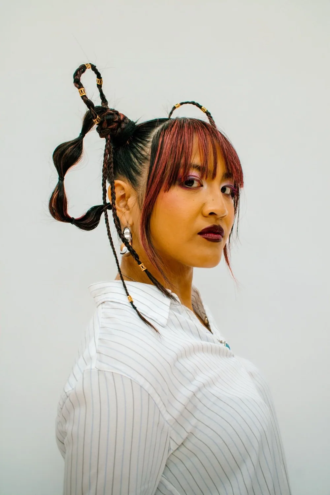
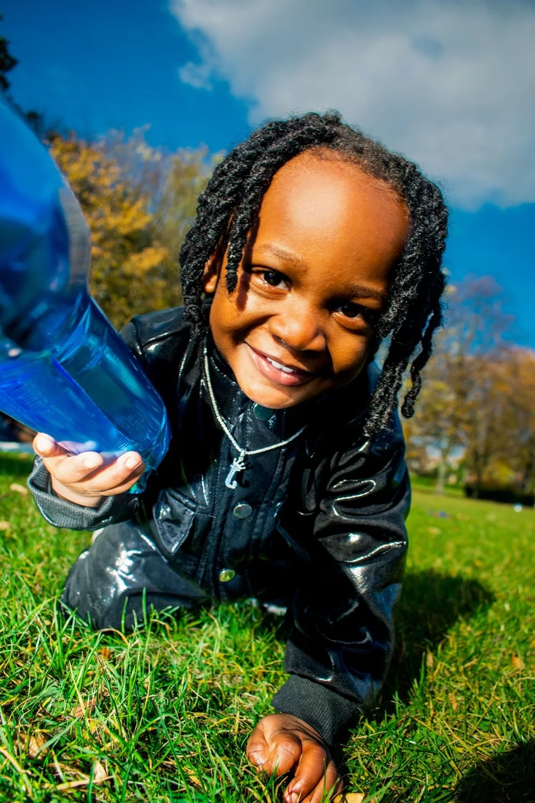
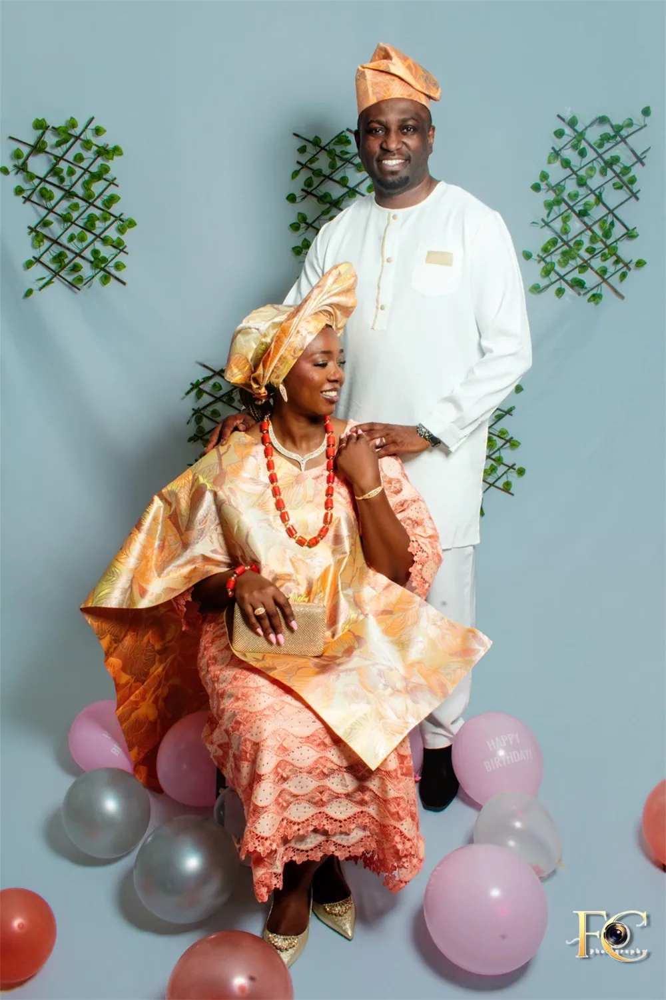
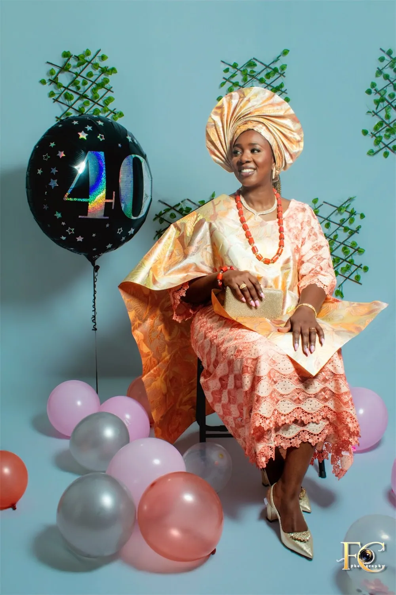
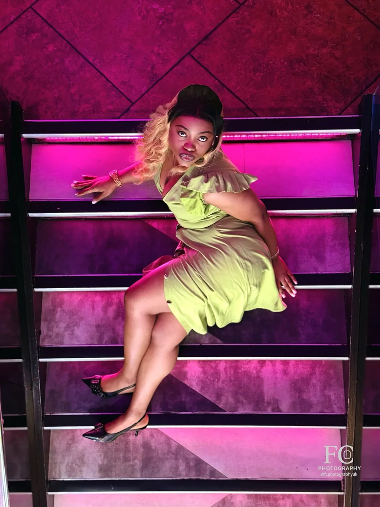
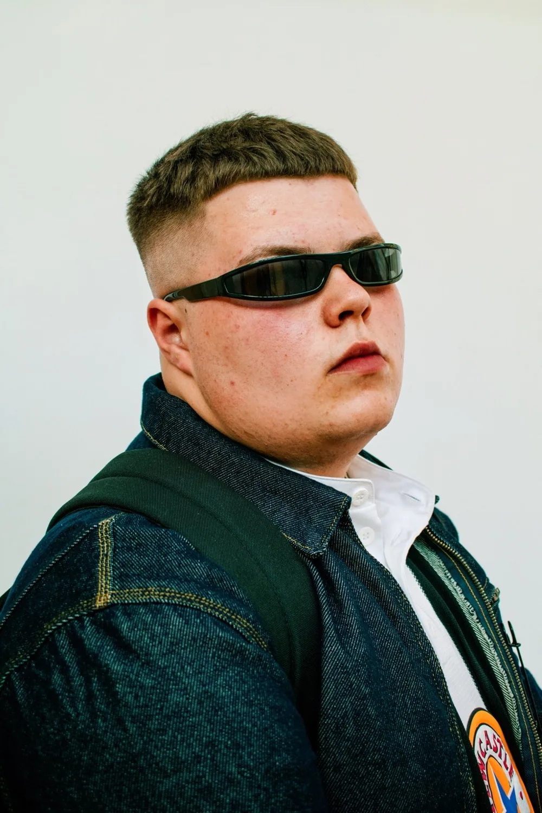
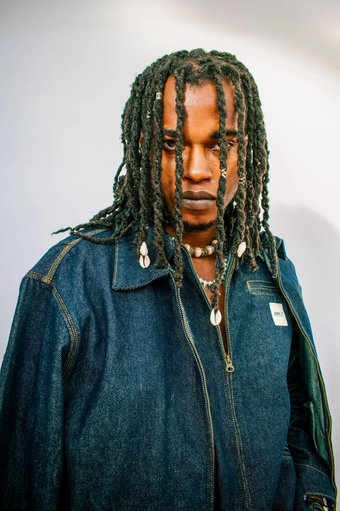
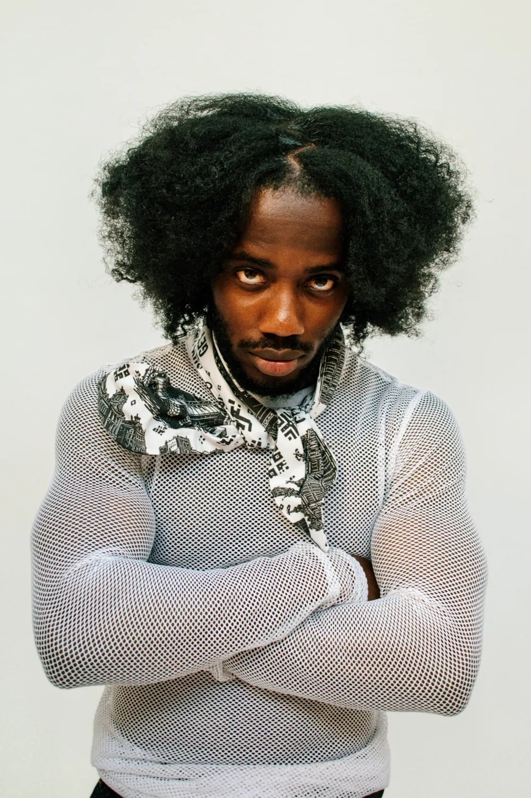
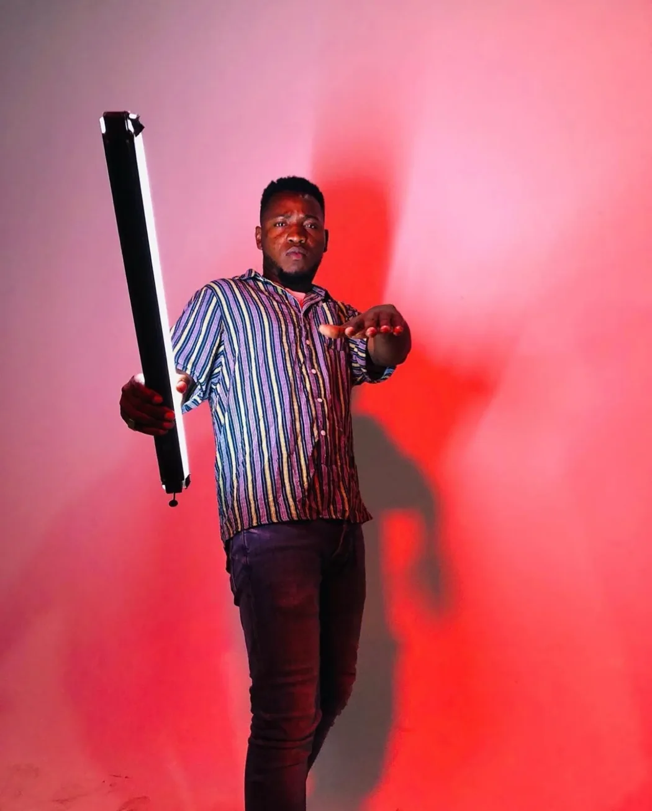

SELECTED REEL / 01Watch on Instagram ↗
FILMMAKER. PHOTOGRAPHER. STORYTELLER.
Stories that
stay with you.
The energy of a performance. The honesty of a conversation. The moments you never want to forget.
I’m David Opara. Let’s bring your story into focus.
Film & direction✳Cinematography✳Photography✳Post-production
01 / THE WORK
Different formats. The same eye for a story.
Made to mean something.
FILM & STILL IMAGESBY DAVID OPARA
FOCUS CREATIVEZ / SELECTED MOTION
Stories in motion.
A selection of moving-image work by David Opara.
Watch here or open the complete reel on Instagram.
If a reel does not appear, use “Watch on Instagram” to open it directly.
FC PHOTOGRAPHY / SELECTED STILLS
People. Presence. Personality.
Fashion, celebrations and the moments that matter.
Photography by David Opara. Select a photograph to view it in full.
11 selected photographs


Jerry J fashion runway


Birthday portraits


Anniversary celebration

Jerry J fashion runway


A milestone birthday


Birthday celebrations


Jerry J fashion runway

A new chapter


Jerry J fashion runway


Jerry J fashion runway


Creative life
A SHORT FILM BY DAVID OPARA
10
PAGES.
10 PAGES.
A SHORT FILM.WATCH IN FULL · YOUTUBE
A SHORT FILM.WATCH IN FULL · YOUTUBE
IN FOCUS / A SHORT FILM
10 Pages
A short film by David Opara, from earlier in my filmmaking journey.
Watch the complete film on YouTube.
Watch 10 Pages02 / WHAT I DO
From the first conversation to the final frame.
Your vision.
My full focus.
A complete creative journey, or an experienced pair of hands for the part you need.
Let’s talk about your project01020304
Film & music video
Direction, cinematography and visual storytelling for artists and creative projects.
Interview & documentary
Real people. Honest conversations. Stories captured with care and intention.
Photography
Portraits, lifestyle, weddings, events and the moments in between.
Editing & colour
Shape the rhythm, find the feeling and bring your footage together.
03 / THE PERSON BEHIND THE LENS
DAVID OPARA / RAREFOCUSA filmmaker’s eye.
A storyteller’s
instinct.
David OparaDIRECTOR · CINEMATOGRAPHER · EDITOR
Good stories begin with paying attention.
I’m David, a filmmaker and photographer originally from Imo State, Nigeria, and raised in Lagos. I have over 11 years of experience in cinematography, video editing and production. I also studied Film and Television Production at Teesside University.
That journey shapes how I work: curious about people, thoughtful about detail, and focused on how an image makes you feel.
Through Focus Creativez and FC Photography, I create moving images and still photographs for artists, people and businesses. Whether it’s a music video, an interview or a personal milestone, the aim is the same: make it matter.
More of my creative worldOver 11 years
Experience in cinematography,
video editing & production
One vision
Direction, camera and edit
working together
No borders
UK based
Worldwide enquiries welcome
04 / HOW WE MAKE IT HAPPEN
A clear process.
Space to create.
01 / CONNECT
Tell me the story.
Share the idea, the date and what you want people to feel. We’ll talk through the possibilities.
02 / CREATE
Bring it into focus.
We’ll agree the scope, approach and quote, then get the right plan in place for your shoot.
03 / DELIVER
Make it yours.
The edit, colour and finishing touches come together, with deliverables and timing agreed for your project.
05 / YOUR NEXT STORY
LET’S MAKE SOMETHINGIt starts with
a conversation.
A fully formed brief or the beginning of an idea.
I’d love to hear what you have in mind.
Every project gets its own quote. We’ll agree the details before your booking is confirmed.